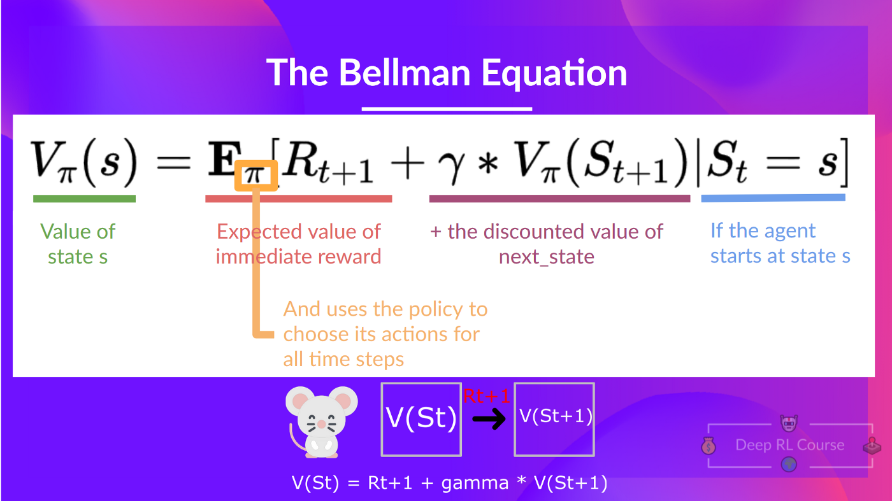

Unit 2 of HF RL Course
Temporal difference (TD)
Learning happens after each step taken by the agent
For example computing non discounted value of a state using TD learning: V(st) = V(st) + α * ( Rt+1 - V(St+1) + V(St) )
Monte Carlo Learning
Learning takes place at the end of the episode and entire trajectory τ is used (e.g. policy-gradient method)
For example computing non discounted value of a state using Monte carlo learning: V(st) = V(st) + α * ( Gt - V(St) ), where G is empirical return from the episode
Bellman equation
Value of the state given policy π equals: V(st) = Rt+1 + γ * V(St+1)

Q-Learning
Off-policy Temporal Difference learning approach that is using value-based method. Internally it is using a table for all the (action,state) tuples and assigns them a value.
on-policy
Update algorithm that is using the same policy for acting and updating
off-policy
Update algorithm that is using one policy for acting and another one for updating